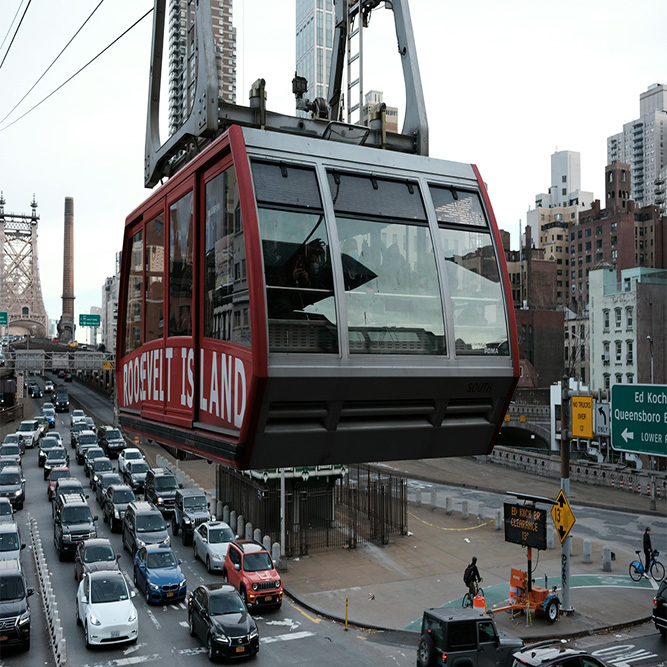

Roosevelt Island / Manhattan
Roosevelt Island Tramway
An aerial cable car connecting Manhattan's Upper East Side with Roosevelt Island.
The Roosevelt Island Tramway is an aerial cable car that spans the East River, connecting Manhattan's Upper East Side with Roosevelt Island.

About
Built
Opened in May 1976, it was the first commuter aerial tramway in the U.S. and carries passengers roughly 3,140ft across the river, offering unique skyline views of Manhattan's East Side, Roosevelt Island, and Queens.
Today
It functions as both a transit link and a tourist attraction accepting both MetroCards and OMNY for the fare. During operating times, the four-minute tram ride runs every 7.5–15 minutes between the Manhattan station at Second Avenue (59th–60th Street) and Roosevelt Island.
Directions
To board from Manhattan, go to the tram station at Second Avenue and East 60th Street.